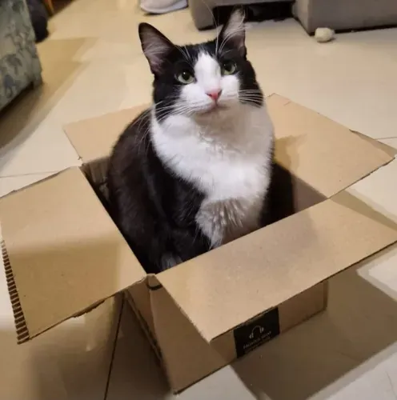

Tom
História | Saúde | Resgate | Voltar para a lista

| Espécie | Gato |
|---|---|
| Idade | 4 meses (aproximada) |
| Porte | Pequeno |
| Situação | Disponível para adoção |
História
Tom foi encontrado em uma caixa de papelão, com os irmãos. Está em tratamento, mas já come ração e brinca bastante.
Saúde
- V4 (quádrupla felina): 1ª dose aplicada
- Vermífugo: aplicado
- Antirrábica: pendente (idade mínima)
Resgate
Data: 15/08/2026
Local: Bairro Jardim
Responsável: Ana Souza